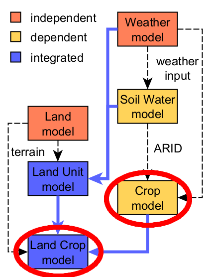
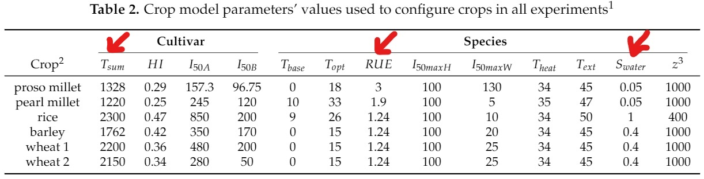
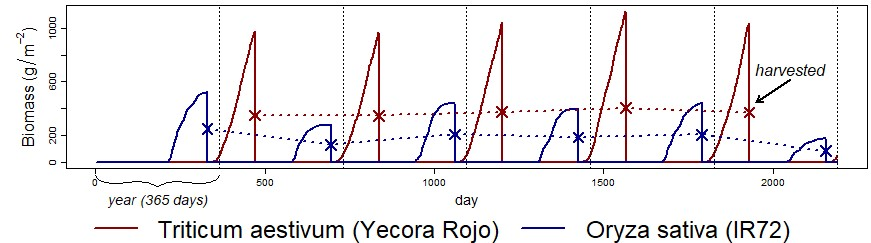
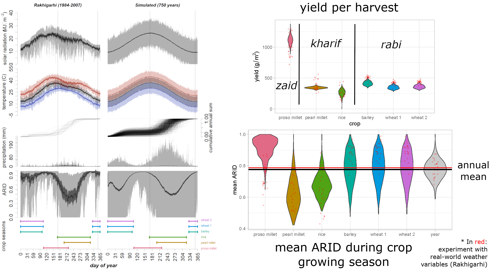
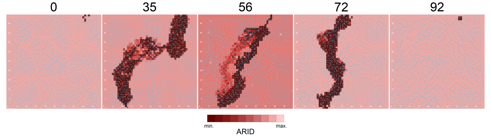
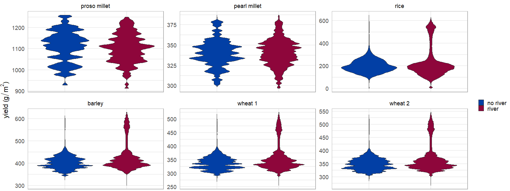
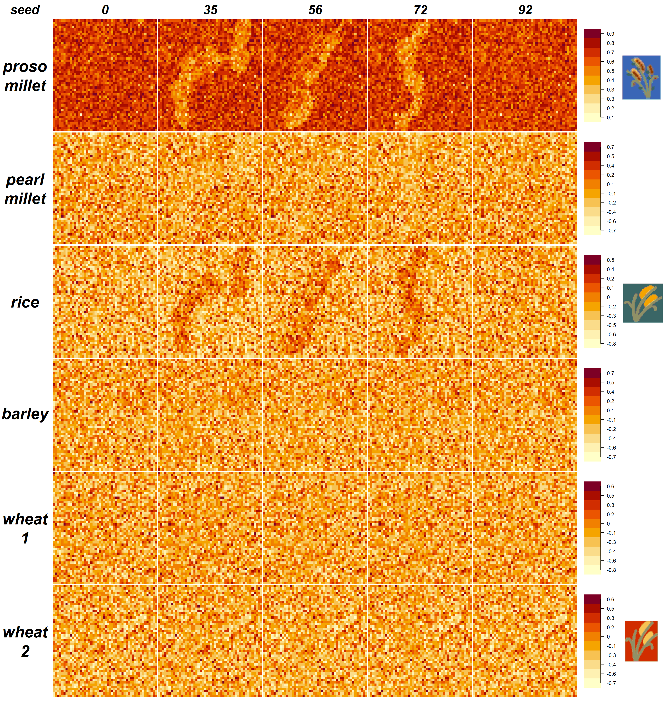

Crop dynamics in the Indus Village model
Andreas Angourakis
(@AndrosSpica),
Jennifer Bates
(@DrJenniferBates),
Jean-Phillipe Baudouin,
Alena Giesche,
Joanna Walker,
M. Cemre Ustunkaya,
Nathan Wright,
Ravindra N. Singh and
Cameron A. Petrie
https://andros-spica.github.io/Leicester-Angourakis-et-al-2022/index.html?print-pdf (printable version)
1. Indus Village overview
Image source: Minecraft Wiki (© Mojang Studios), via GamepediaEnd-goals
Explore human adaptation to the variability
in landscapes of NW India during the Mature Harappan (urban phase of the Indus Civilisation)
Expose the sustainability of
food production regimes,
mainly in terms of cropping strategies,
in front of climate change

- Implementation in NetLogo, documentation in pseudocode diagrams and R markdown
- parameter exploration (sensitivity analysis)
- scenarios (parameters, programmed trends
and changes, alternative algorithms)
2. Crop model
Image source: Daniel Davies and Brett Galkowski (© Mojang Studios)
Crops in the Indus Civilisation
- Cereals:
- winter or rabi: barley, wheat
- pre-monsoon summer or zaid: millets
- post-monsoon summer or kharif: millets, rice
- Pulses
- Other
Bates 2019, J. Open Arch. Data, 7:5
Multi-cropping
Petrie & Bates 2017, J. J World Prehist
Crop model
Adapted from
the SIMPLE crop model
Zhao et al. 2019, European J. of Agronomy, 104:97-106
- One model, many crops
- Crops defined by 13 parameters
- Integrates ARID
- Biomass growth: RUE modulated by temperature, CO2 and ARID
- A single growth phase (def. thermal time)
- Output: yield (g·m-2)
Crops - subset of Indus subset of Indus staple crops
variable in: season & cycle duration | RUE level | water stress sensitivity

Crop model | Yield & Seasonality
Crop model outcome (using input from Weather and Soil Water models)
3. Integrated Land Crop model
Image source: Merreable in Planet Minecraft (© Mojang Studios)

← sample of terrains (created with Land model)
- Land Water + Crop = Land Crop
-
Land + Weather + Soil Water = Land Water
river inflow, run-off & inundation -
Crops as ecological components
water (aquatic) > crops > wood > brush > grass > bare soil -
Crop choice and management variables
- crop selection: which crops to grow
- cropping intensity:
% of land unit for all crops - crop frequency:
% of intensity for each crop - other: spacing, sowing/harvest dates
Land Crop model | Results
Impact of flooding areas dependent on water sensitivity
 Land Crop model | Results
Experiment with randomised crop frequencies
(Local) crop niche gradient:
correlation between
land unit total yield
and
frequency of each crop.

Angourakis A, Bates J, Baudouin J-P, Giesche A, Walker J, Ustunkaya M C,
Wright N, Singh R N and Petrie C A. (in review).
Weather, land and crops in the Indus Village model: A simulation framework for crop dynamics under environmental variability and climate change in the Indus Civilisation.
Quaternary (Special Issue: Human Activities and Development of Food Production in the Holocene).
Towards the Indus Village agent
Crop choice dilemma
which crops to grow in a land unit, given the mandate of producing a certain amount of yield
from a specific set of crops with diverse characteristics
- Crop selection & diversity
- Limited means of production and workforce
- Seasonality & Climate-driven variability
- Local & regional environmental diversity
Towards the Indus Village agent
Risk in the crop choice dilemma
risk associated with water stress sensitivity:
high-risk ("thirsty") vs low-risk ("drought-resistant")
- Why choose high-risk crops at all?
- condition A: crop value outweights the risk (e.g. cash crop)
- condition B: risk can be mitigated
Towards the Indus Village agent
Risk-mitigation in the crop choice dilemma
Strategies:
- hydrophile: keep the water flowing
→ minimise the risk of high-risk crops - polyphile: keep it (agro)diverse
→ compensate the risk of high-risk crops - To be often combined locally,
also with other agronomic and economic strategies
Conclusions
- Seasonality matters
- Low and high-risk crops
- Multi-cropping and risk mitigation
- Long-haul ABM modelling - next models to be integrated:
demography, nutrition, food economy and land use
'TwoRains' project
ERC, 2015-2021
Acknowledgements
Thanks to the Land, Water and Settlement and TwoRains teams:
Aftab Alam, Alessandro Ceccarelli, Sagorika Chakraborty,
Sudarshan Chakradhari, Arti Chowdhary, Yama Dixit, Charly French, Adam Green,
Henry Green, Lily Green, David Hodell, Penny Jones, Carla Lancelotti, Emma Lightfoot, Frank Lynam,
Sayantani Neogi, Hector Orengo, Arun Kumar Pandey, Danika Parikh, Vikas Pawar, Amit Ranjan,
David Redhouse, Dheerendra Pratab Singh, & Akshyeta Suryanarayan.
Special thanks also to the Department of AIHC and Archaeology, BHU, the European Research Council (ERC),
and the UK-India Education and Research Initiative (UKIERI) for support and funding, and to the Archaeological
Survey of India for permission to carry out the work.
THANK YOU FOR YOUR ATTENTION!
https://andros-spica.github.io/Leicester-Angourakis-et-al-2022/index.html?print-pdf (printable version)